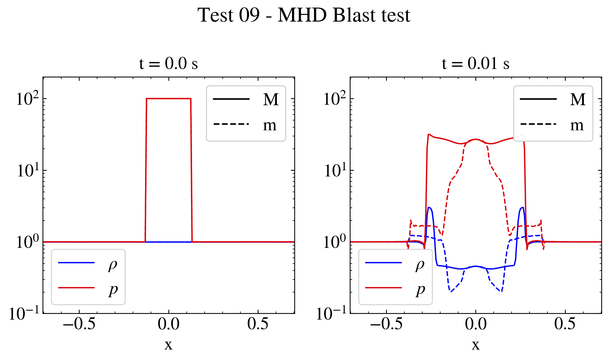

Test 09 - MHD Blast test#

"""MHD Blast test. This test shows how to plot different quantities with customized legends in two different subplots referring to initial and final time data. The data are the ones obtained from the PLUTO test problem $PLUTO_DIR/Test_Problems/MHD/Blast (configuration 9). The data is loaded twice into a pload object D and the Image class is created. The 'slices' method is used to obtain a slice of the desired quantity along the diagonals of the domain. The plot method and the legend method are then used to plot a highly informative plot of density and pression with customized legend labels. The image is then saved and shown on screen. """ # Loading the relevant packages import numpy as np import pyPLUTO # Initialization Image = pyPLUTO.Image(suptitle="Test 09 - MHD Blast test", nwin=9) Image.create_axes(ncol=2) # Helper function to plot a frame def plot_frame(Data: pyPLUTO.Load, ax_idx: int, time_label: str) -> None: """Plot a frame of the simulation data.""" x = Data.x1 * np.sqrt(2) for _, (var, label, color, yrange) in enumerate( [ (Data.rho, r"$\rho$", Image.color[0], [0.1, 200]), (Data.prs, r"$p$", Image.color[1], [0.1, 200]), ] ): var_max = Data.slices(var, diag=True) var_min = Data.slices(var, diag="min") Image.plot( x, var_max, c=color, ax=ax_idx, label=label, yscale="log" if label == r"$p$" else "linear", legpos=3, ) Image.plot( x, var_min, c=color, ax=ax_idx, ls="--", yrange=yrange, title=f"t = {time_label} s", xtitle="x", legpos=3, ) Image.legend(ax=ax_idx, legpos=1, label=["M", "m"], ls=["-", "--"]) # Plotting the initial time # Set the relative path to the data folder data_path = pyPLUTO.find_example("MHD/Blast") # Load data Data = pyPLUTO.Load(0, path=data_path) plot_frame(Data, ax_idx=0, time_label="0.0") # Plotting the final time Data = pyPLUTO.Load(path=data_path) plot_frame(Data, ax_idx=1, time_label="0.01") # Saving and showing Image.savefig("test09_blast.png", script_relative=True) # pyPLUTO.show()
{kind=link}